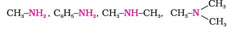

"The chief commercial use of amines is as intermediates in the synthesis of medicines and fibres".
Amines constitute an important class of organic compounds derived by replacing one or more hydrogen atoms of ammonia molecule by alkyl/aryl group(s). In nature, they occur among proteins, vitamins, alkaloids and hormones. Synthetic examples include polymers, dyestuffs and drugs. Two biologically active compounds, namely adrenaline and ephedrine, both containing secondary amino group, are used to increase blood pressure. Novocain, a synthetic amino compound, is used as an anaesthetic in dentistry. Benadryl, a well known antihistaminic drug also contains tertiary amino group. Quaternary ammonium salts are used as surfactants. Diazonium salts are intermediates in the preparation of a variety of aromatic compounds including dyes. In this Unit, you will learn about amines and diazonium salts.
Amines can be considered as derivatives of ammonia, obtained by replacement of one, two or all the three hydrogen atoms by alkyl and/or aryl groups.
For example:
